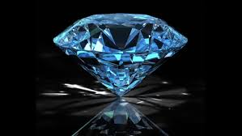

<!DOCTYPE html>
<html>

<head>
<title>Sistema Solar</title>
<meta charset = 'utf-8'>

</head>
<link rel= 'stylesheet' type='text/css' href='../css/estilos.css'>
</html>
<h1><body style = 'text-align:center;'><script>

/*
RAINBOW TEXT Script by Matt Hedgecoe (c) 2002
Featured on JavaScript Kit
For this script, visit http://www.javascriptkit.com
*/

// ********** cambia aquí

var text="Curiosidades" // tu texto
var speed=80 // velocidad de movimiento 


if (document.all||document.getElementById){
document.write('<span id="highlight">' + text + '</span>')
var storetext=document.getElementById? document.getElementById("highlight") : document.all.highlight
}
else
document.write(text)
var hex=new Array("00","14","28","3C","50","64","78","8C","A0","B4","C8","DC","F0")
var r=1
var g=1
var b=1
var seq=1
function changetext(){
rainbow="#"+hex[r]+hex[g]+hex[b]
storetext.style.color=rainbow
}
function change(){
if (seq==6){
b--
if (b==0)
seq=1
}
if (seq==5){
r++
if (r==12)
seq=6
}
if (seq==4){
g--
if (g==0)
seq=5
}
if (seq==3){
b++
if (b==12)
seq=4
}
if (seq==2){
r--
if (r==0)
seq=3
}
if (seq==1){
g++
if (g==12)
seq=2
}
changetext()
}
function starteffect(){
if (document.all||document.getElementById)
flash=setInterval("change()",speed)
}
starteffect()
</script></body></h1>

<b3>Neptuno</h3>
<h5>Un planeta gaseoso siempre suele ser cambiante y así lo indicó en su día la “Gran Mancha Oscura” que, del tamaño de la Tierra, se divisó hasta el año 1.994. Ese mismo año la marca desapareció y empezó a formarse otra lo que confirmó la presencia de grandes tempestades y vientos de velocidad no conocida en ningún otro lugar.</h5>
<div align="center"></div>
<h5>El tiempo necesario para ir a Neptuno desde la Tierra dependería del camino escogido y del momento en el que ambos planetas estuvieran de sus órbitas cuando la misión fuese lanzada. Por ejemplo, la nave espacial Voyager 2 fue lanzada el 20 de agosto de 1977 y llegó a Neptuno el 24 de agosto de 1989 (descubriendo seis de las ocho lunas que tiene y confirmando la existencia de anillos).</h5>
<h5>Es de color azul porque su atmósfera cuenta con un gas llamado metano. Este gas, bajo los rayos de Sol, absorbe los colores rojos y hace que la luz reflejada desde el mencionado sistema parezca azul. En ocasiones, se observan manchas oscuras que son tormentas violetas.</h5>
<h5>Se supone que, debajo de la atmósfera de hidrógeno y helio, se encuentra un manto líquido compuesto por estos elementos y varios hielos (agua, metano, amoníaco, etc.), seguido por un núcleo de hielo y roca. Se supone, pero nadie lo puede afirmar con certeza. Así pues, el manto de Neptuno podría estar repleto de diamantes gigantes.</h5>
<div align="center"></div>

<h3>Saturno</h3>
<h5>El nombre del planeta Saturno proviene del nombre del dios de la agricultura en la mitología romana, se dice que es el cronos de los griegos, también se dice que Saturno es el padre de Júpiter.</h5>
<h5>Saturno es un planeta realmente longevo, tiene 4,5 mil millones de años de existencia.</h5>
<h5>En Saturno hay luces y son las mismas que reflectan a la Tierra, se encuentran en el norte y en el sur de este planeta, se dice que esta iluminación es provocada por las llamadas auroras, unas partículas provenientes del sol.</h5>
<h5>En Titán, una de las lunas de Saturno, existen criovolcanes o lo que es lo mismo volcanes de hielo, muy diferente a lo que estamos acostumbrados a ver, en lugar de lava caliente, de estos volcanes emerge una sustancia gélida de compuestos volátiles, como agua, metano y amonio.</h5>
<h5>En el polo norte se localiza un hexágono gigante, un hallazgo extremadamente sorprendente, que puede cambiar de color a medida que avanza en el tiempo y logra vientos de más de 300 kilómetros por hora y sus lados tienen dimensiones mayores que el diámetro de nuestro planeta.</h5>
<h5></h5>

<ul>
<li><a href='../index.html'>Inicio</a></li>
</ul>
<ul>
<li><a href='historia.html'>Historia</a></li>
</ul>
<ul>
<li><a href='astrologia.html'>Astrología</a></li>
</ul>
<ul>
<li><a href='curiosidades.html'>Curiosidades</a></li>
</ul>
<ul>
<li><a href='unpocodehumor.html'>Un poco de Humor</a></li>
</ul>
<body>


